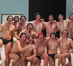
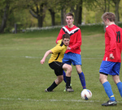
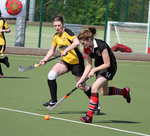

Roses
Roses 2012: Sunday as it happened
Join the Nouse Sport team for live scores, commentary, and match reports throughout the day
Lancaster
York
Roses reports
Women’s basketball show grit in Roses victory
York’s women’s basketball team put in an excellent performance against their Lancastrian rivals on Roses Sunday, beating them convincingly 32-28
Classy women’s volleyball team beat Lancaster in style
York’s volleyball women were composed as they overcame a potentially tough challenge against Lancaster with consummate ease
Comeback not enough for men’s hockey seconds
York’s men’s hockey seconds went down 3-2 to Lancaster on Saturday despite a brave comeback
Women’s football fall to Roses defeat
In what was a frustrating Roses clash, the York women’s football team were defeated 2-0 by a strong Lancaster side
Women’s hockey seconds breeze past Roses opponents
York’s women’s hockey seconds thrashed their Roses opponents 4-0 on Saturday
Centurions do the double over Lancaster in tight Roses victory
York Centurions came out on top in a tight Roses encounter on Saturday
Incredible scenes as men’s water polo secure points in thriller
In one of the tournament’s most gripping encounters, York’s men’s water polo team snatched all four points with a superb Roses display
York thirds battle to 1-1 draw
In a fiery and physical Roses clash, the University of York thirds battled hard to earn a 1-1 draw against an aggressive Lancaster side
Women’s water polo brave in Roses defeat
York’s women’s water polo side produced a good display against Lancaster, but eventually lost out to a team that just edged them in terms of quality
Mixed results for York fencers
York’s fencers achieved a comprehensive victory in the men’s event while the women’s team narrowly lost out on taking the points
Split points in the women’s hockey firsts
The women’s hockey firsts recovered well from the setback of an early goal to earn a good draw with their Lancaster rivals
Netball thirds well beaten in Roses encounter
In a scrappy encounter, York’s netball thirds were undone by the better attacking quality of their Red Rose rivals
 Lancaster defeat York in football firsts clash to regain Roses crown
Lancaster defeat York in football firsts clash to regain Roses crown
The men’s football firsts succumbed to a 3-1 Roses defeat, officially sending the Carter-James trophy back to Lancaster
Men’s hockey thirds euphoric after securing Roses point
In the first fixture of the second day of Roses, the men’s hockey thirds turned their supremacy into victory in the final stages of the match, after being frustrated by the Lancaster defence for the majority of the game
York sailors exact Roses revenge in final race thriller
Last year’s defeat after a long period of dominance meant the sailors were out for revenge in their Roses bout
Mixed fortunes for Mixed Table Tennis
The University of York table tennis teams enjoyed very different evenings at this year’s Roses
Big Roses win for York cyclists
The University Cycling Club took an unexpected yet convincing victory at Roses, capping off a busy weekend for the White Rose cyclists
Men’s basketball lose in epic Roses battle
The destination of the Carter-James Trophy was already decided before tip-off, but that didn’t stop York and Lancaster’s men’s basketball teams from producing a thriller on Sunday afternoon
Football seconds collapse in Roses clash
York’s men’s football seconds were on the end of a 5-1 thrashing, as Lancaster grabbed two important points on Sunday morning
Tennis club beat Lancaster in thrilling ties
Both the men and women did York proud on Saturday as both squads came away with outstanding 5-4 victories
 Netball firsts fall short in spirited effort
Netball firsts fall short in spirited effort
Despite a heavy 54-29 defeat on Saturday, York’s ladies could not be faulted for effort as they succumbed to a powerful Lancaster side
Flying wingers lift rugby second XV
Tries from Ollie Woodward and Conan Osborne helped the mens’ second XV seize a valuable pair of Roses points in an entertaining match on Saturday afternoon
Men’s rugby thirds turn on style in second-half romp
The men’s thirds rugby team ground out an impressive 37 – 5 win against its gutsy Lancastrian opposition
Netball seconds suffer crushing Roses defeat
A heavy defeat for the York netball seconds today earned Lancaster a further two points and left another dent in the University’s effort to retain their title
Women’s Pool humbled by Lancaster
The York women’s Pool team suffered a 5-1 defeat at the hands of Lancaster Ladies yesterday, in a frustrating Roses clash
York men’s Pool lose in close Roses clash
The York men’s Pool team suffered a narrow 5-4 defeat in a tightly contested Roses fixture, one not short of controversy and an electric crowd atmosphere
Women’s hockey thirds slip to narrow defeat
The women’s hockey thirds lost by a single goal to their Lancaster counterparts, in a tepid Roses affair on Saturday morning
 Rugby firsts dominate to claim Roses points
Rugby firsts dominate to claim Roses points
York’s men’s rugby firsts romped to a 22-6 victory in Saturday’s showpiece Roses fixture, completing yet another Roses whitewash for men’s rugby
York men stroll to indoor hockey win
York’s men’s indoor hockey team recorded a comfortable victory against Lancaster yesterday, winning 8-2
Netball barbarians suffer narrow Roses defeat
The York Barbarians netball team suffered a narrow 21-18 defeat yesterday at the hands of Lancaster in a thrilling Roses clash
Women’s hockey firsts take points in indoor match
York’s women’s indoor hockey firsts secured two Roses points today when they defeated Lancaster 5-2
Lancaster take mixed volleyball points
York’s mixed volleyball team threw away an early lead as they slipped to a 3-1 defeat at Roses
Women’s firsts brushed aside in rugby sevens
Like their seconds team before them, the women’s rugby firsts were unable to stop a rampant Lancaster in their sevens match
Men’s rugby sevens secure convincing win
York’s men’s rugby team grabbed two vital Roses points as they beat Lancaster 12-5 in their sevens match on Friday, though the score didn’t reflect York’s dominance
Lancaster dominate in women’s rugby seconds
York’s women’s rugby seconds were on the end of a thrashing, as they lost their sevens fixture 32-0 in Friday’s Roses match
Badminton get York off to a flier with demolition of Lancaster
Friday kicked off with badminton and York proved they would be hard to beat this weekend with a dominant performance
Roses Torch Relay begins
The new Roses Torch was tonight taken across campus, opening the first ever Roses Torch relay
Cricket seconds claim first York points
York put their first two Roses points on the board today, as the men’s cricket seconds secured victory at Morecambe CC
Lancaster take Roses lead
Lancaster University have taken an early Roses lead over York, beating the White Rose in today’s equestrian events to take the first six points of the tournament
Adverse weather hits Roses opener
Sunday’s rowing events, which were set to begin this year’s Roses competition between York and Lancaster, had to be cancelled due to high winds and heavy rainfall
Roses 2012: Your guide to this year’s tournament
Dan Holland and Luke Gardener preview Roses and pick out the weekend’s key battles
Fixtures
- Thursday
- Friday
- Saturday
- Sunday
| Event | Location | Time | Points | Score |
|---|---|---|---|---|
| Equestrian - Mixed 1sts | Midgeland | Wednesday 12pm | 4 | York 0 - 4 Lancaster |
| Equestrian - Mixed 2nds | Midgeland | Wednesday 12pm | 2 | York 0 - 2 Lancaster |
| Cricket - Men's 2nds | Morecambe CC | Thursday 12pm | 2 | York 160 - 126 Lancaster |
| Event | Location | Time | Points | Score |
|---|---|---|---|---|
| Badminton - Men's 1sts | Sports Centre Hall 1 | 10:15am | 4 | York 8 - 1 Lancaster |
| Badminton - Women's 1sts | Sports Centre Hall 1 | 10:15am | 4 | York 5 - 4 Lancaster |
| Badminton - Men's 2nds | Sports Centre Hall 2 | 10:15am | 2 | York 6 - 3 Lancaster |
| Cricket - Men's 1sts | Morecambe CC | 12pm | 4 | York 110 - 111 Lancaster |
| Rugby 7s - Women's 2nds | Rugby Pitch 2 | 1:30pm | 1 | York 0 - 32 Lancaster |
| Netball - College A Winners | Outdoor Netball Courts | 1:30pm | 1 | York 18 - 45 Lancaster |
| Netball - College Select | Outdoor Netball Courts | 1:30pm | 1 | York 18 - 21 Lancaster |
| Indoor Hockey - Men's 2nds | Main Sports Hall | 1:45pm | 1 | York 2 - 5 Lancaster |
| Rugby 7s - Women's 1sts | Rugby Pitch 1 | 2pm | 2 | York 0 - 22 Lancaster |
| Tennis - Men's 2nds | Tennis Courts | 2pm | 2 | York 2 - 7 Lancaster |
| Tennis - Mixed | Tennis Courts | 2pm | 4 | York 3 - 3 Lancaster |
| Indoor Hockey - Women's 2nds | Main Sports Hall | 2:30pm | 1 | York 3 - 4 Lancaster |
| Pool - Men's College | Barker House Farm | 3pm | 0 | York 3 - 6 Lancaster |
| Rugby 7s - Men's 1sts | Rugby Pitch 1 | 3pm | 2 | York 12 - 5 Lancaster |
| Indoor Hockey - Women's 1sts | Main Sports Hall | 3:30pm | 2 | York 5 - 2 Lancaster |
| Netball - College B Winners | Outdoor Netball Courts | 3:30pm | 0 | York 0 - 0 Lancaster |
| Darts - Women's | Barker Farm House | 4pm | 4 | York 4 - 5 Lancaster |
| Indoor Hockey - Men's 1sts | Main Sports Hall | 4:15pm | 2 | York 8 - 2 Lancaster |
| Squash - Men's 2nds | Squash Courts | 5pm | 2 | York 0 - 3 Lancaster |
| Squash - Men's 1sts | Squash Courts | 5pm | 4 | York 3 - 2 Lancaster |
| Squash - Women's | Squash Courts | 5pm | 4 | York 0 - 3 Lancaster |
| Volleyball - Mixed | Sports Centre Hall 2 | 5:30pm | 4 | York 1 - 3 Lancaster |
| Indoor Frisbee - Open | Sports Centre Hall 1 | 5:30pm | 2 | York 3 - 10 Lancaster |
| Indoor Frisbee - Womens' | Sports Centre Hall 1 | 5:30pm | 0 | York 9 - 4 Lancaster |
| Indoor Frisbee - Mixed | Sports Centre Hall 1 | 5:30pm | 2 | York 2 - 6 Lancaster |
| Pool - Women's | Barker Farm House | 6pm | 4 | York 1 - 5 Lancaster |
| Pool - Men's | Barker Farm House | 6pm | 4 | York 4 - 5 Lancaster |
| Darts - Men's | Barker Farm House | 8pm | 4 | York 5 - 4 Lancaster |
| Event | Location | Time | Points | Score |
|---|---|---|---|---|
| Hockey - Men's 3rds | Astro 1 | 9:30am | 1 | York 1 - 0 Lancaster |
| Canoe Slalom - Men's | Garstang | 10am | 2 | York 0 - 1 Lancaster |
| Canoe Slalom - Women's | Garstang | 10am | 2 | York 1 - 0 Lancaster |
| Archery - Senior Mixed | Barker Pitches | 10am | 4 | York 0 - 1 Lancaster |
| Archery - Novice Mixed | Barker Pitches | 10am | 2 | York 0 - 1 Lancaster |
| Archery - Senior Men's | Barker Pitches | 10am | 1 | York 0 - 1 Lancaster |
| Archery - Senior Women's | Barker Pitches | 10am | 1 | York 0 - 1 Lancaster |
| Archery - Novice Men's | Barker Pitches | 10am | 1 | York 1 - 0 Lancaster |
| Archery - Novice Women's | Barker Pitches | 10am | 1 | York 0 - 1 Lancaster |
| Sailing - Mixed | Bolton Sailing Club | 10am | 4 | York 3 - 2 Lancaster |
| Indoor Football - Women's 2nds | Sports Centre Hall 1 | 10:15am | 1 | York 0 - 8 Lancaster |
| Badminton - Mixed | Sports Centre Hall 2 | 10:15am | 4 | York 5 - 4 Lancaster |
| Hockey - Women's 3rds | Astro 1 | 10:45am | 1 | York 0 - 1 Lancaster |
| Indoor Football - Women's 1sts | Sports Centre Hall 1 | 11am | 2 | York 0 - 6 Lancaster |
| Running - Women's 5k | Cross Country | 11am | 4 | York 0 - 1 Lancaster |
| Climbing - Mixed B Team | Climbing Wall | 11am | 2 | York 158 - 410 Lancaster |
| Climbing - Women's Individual B Team | Climbing Wall | 11am | 2 | York 0 - 1 Lancaster |
| Climbing - Men's Individual B Team | Climbing Wall | 11am | 2 | York 0 - 1 Lancaster |
| Climbing - Mixed C Team | Climbing Wall | 11am | 0 | York 0 - 345 Lancaster |
| Clay Pigeon Shooting - Mixed | Crabtree Shooting Ground | 11am | 4 | York 1 - 0 Lancaster |
| Rugby - Men's 3rds | Rugby Pitch 2 | 12:30pm | 1 | York 37 - 5 Lancaster |
| Swimming - Men's | Swimming Pool | 11:30am | 4 | York 50 - 50 Lancaster |
| Swimming - Women's | Swimming Pool | 11:30am | 4 | York 59 - 43 Lancaster |
| Hockey - Women's 2nds | Astro 1 | 12pm | 2 | York 4 - 0 Lancaster |
| Netball - Women's 3rds | Sports Centre Hall 1 | 12pm | 1 | York 26 - 38 Lancaster |
| Ballroom Dancing - Beginners Ballroom | Great Hall | 12pm | 1 | York 0 - 42 Lancaster |
| Running - Men's 10k | Cross Country | 12pm | 4 | York 0 - 1 Lancaster |
| Trampolining - Mixed | Sports Centre Hall 2 | 12:30pm | 4 | York 371.8 - 364.8 Lancaster |
| Tennis - Men's 1sts | Tennis Courts | 12:30pm | 4 | York 5 - 4 Lancaster |
| Tennis - Women's 1sts | Tennis Courts | 12:30pm | 4 | York 5 - 4 Lancaster |
| Debating - Mixed | Frankland LT | 12:30pm | 4 | York 4 - 0 Lancaster |
| Rugby - Men's 2nds | Rugby Pitch 2 | 2pm | 2 | York 34 - 12 Lancaster |
| Rugby - Women's 1sts | Rugby Pitch 1 | 1:45pm | 4 | York 7 - 60 Lancaster |
| Ballroom Dancing - Beginners Latin | Great Hall | 12:45pm | 1 | York 0 - 1 Lancaster |
| Lacrosse - Mixed | Football Pitch 2 | 1pm | 4 | York 9 - 4 Lancaster |
| American Football - Men's 1sts | Rugby League Pitch | 1pm | 4 | York 15 - 14 Lancaster |
| Ultimate - Open Outdoor | Muga | 1:30pm | 4 | York 3 - 15 Lancaster |
| Hockey - Men's 2nds | Astro 1 | 1:30pm | 2 | York 2 - 3 Lancaster |
| Skiing - Mixed | Rosendale Ski Centre | 1:30pm | 4 | York 1 - 0 Lancaster |
| Freestyle | Rosendale Ski Centre | 1:30pm | 4 | York 1 - 1 Lancaster |
| Snowboard | Rosendale Ski Centre | 1:30pm | 4 | York 0 - 1 Lancaster |
| Ballroom Dancing - Advanced Ballroom | Great Hall | 1:30pm | 1 | York 0 - 1 Lancaster |
| Climbing - Mixed A | Climbing Wall | 2pm | 4 | York 0 - 1 Lancaster |
| Climbing - Women's Individual A | Climbing Wall | 2pm | 4 | York 0 - 1 Lancaster |
| Climbing - Men's Individual A | Climbing Wall | 2pm | 4 | York 0 - 1 Lancaster |
| Netball - Women's 2nds | Sports Centre Hall 1 | 2pm | 2 | York 21 - 51 Lancaster |
| Karate - Men's Kata | Dance Studio | 2pm | 1 | York 1 - 2 Lancaster |
| Karate - Men's Kumite | Dance Studio | 2pm | 1 | York 0 - 3 Lancaster |
| Karate - Women's Kata | Dance Studio | 2pm | 1 | York 1 - 2 Lancaster |
| Karate - Women's Kumite | Dance Studio | 2pm | 1 | York 2 - 0 Lancaster |
| Rugby - Men's 1sts | Rugby Pitch 1 | 3:15pm | 4 | York 22 - 6 Lancaster |
| Ballroom Dancing - Advanced Latin | Great Hall | 2:15pm | 1 | York 0 - 1 Lancaster |
| Hockey - Women's 1sts | Astro 1 | 3pm | 4 | York 1 - 1 Lancaster |
| Netball - Women's 1sts | Sports Centre Hall 1 | 4pm | 4 | York 29 - 54 Lancaster |
| Dancesport - Ballet | Great Hall | 4pm | 1 | York 207 - 222 Lancaster |
| Canoe Polo - Women's B | Swimming Pool | 4:15pm | 0 | York 3 - 1 Lancaster |
| Hockey - Men's 1sts | Astro 1 | 4:30pm | 4 | York 1 - 1 Lancaster |
| Dancesport - Tap | Great Hall | 4:30pm | 1 | York 1 - 0 Lancaster |
| Dancesport - Modern/Jazz | Great Hall | 5pm | 1 | York 0 - 1 Lancaster |
| Canoe Polo - Men's B | Swimming Pool | 5pm | 0 | York 2 - 3 Lancaster |
| Dancesport - Contemporary | Great Hall | 5:30pm | 1 | York 1 - 0 Lancaster |
| Canoe Polo - Men's A | Swimming Pool | 5:45pm | 2 | York 2 - 2 Lancaster |
| Table Tennis - Mixed 1sts | Sports Centre Hall 2 | 6pm | 4 | York 9 - 4 Lancaster |
| Table Tennis - Mixed 2nds | Sports Centre Hall 2 | 6pm | 2 | York 3 - 9 Lancaster |
| Canoe Polo - Women's A | Swimming Pool | 6:30pm | 2 | York 4 - 0 Lancaster |
| Water Polo - Women's | Swimming Pool | 7:30pm | 4 | York 5 - 12 Lancaster |
| Water Polo - Men's | Swimming Pool | 8:30pm | 4 | York 15 - 12 Lancaster |
| Event | Location | Time | Points | Score |
|---|---|---|---|---|
| Fencing - Women's 1sts | Sports Centre Hall 2 | 10:15am | 4 | York 122 - 135 Lancaster |
| Fencing - Men's 1sts | Sports Centre Hall 2 | 10:15pm | 4 | York 135 - 108 Lancaster |
| Fencing - Men's 2nds | Sports Centre Hall 2 | 10:15am | 0 | York 134 - 103 Lancaster |
| Football - Men's 2nds | Football Pitch 2 | 10:15am | 2 | York 1 - 5 Lancaster |
| Football - Men's 3rds | Football Pitch 4 | 10:15am | 1 | York 1 - 1 Lancaster |
| Volleyball - Women's 1sts | Sports Centre Hall 1 | 10:20am | 4 | York 3 - 1 Lancaster |
| Croquet | Ruskin Lawn | 11am | 0 | York 1 - 0 Lancaster |
| Football - College A Winners | Football Pitch 3 | 11:30am | 1 | York 0 - 1 Lancaster |
| Football - College B Winners | Football Pitch 5 | 11:30am | 0 | York 4 - 2 Lancaster |
| Basketball - Women's 1sts | Sports Centre Hall 1 | 12:15pm | 4 | York 32 - 28 Lancaster |
| Football - Women's 1sts | Football Pitch 2 | 12:30pm | 4 | York 0 - 2 Lancaster |
| Football - Men's 1sts | Football Pitch 1 | 12:30pm | 4 | York 1 - 3 Lancaster |
| Cycling - Road Race | Salt Ayre Sports Centre | 12:30pm | 4 | York 1 - 0 Lancaster |
| Cycling - Mountain Biking | Salt Ayre Sports Centre | 12:30pm | 0 | York 1 - 0 Lancaster |
| University Challenge - Mixed | Management School LT1 | 12:30pm | 0 | York 0 - 1 Lancaster |
| Hockey - Mixed 1sts | Astro 1 | 1pm | 0 | |
| Lacrosse - Women's 1sts | Barker Pitches | 1:15pm | 4 | York 20 - 3 Lancaster |
| Basketball - Men's 1sts | Sports Centre Hall 2 | 2pm | 4 | York 58 - 64 Lancaster |
| Lacrosse - Men's 1sts | Barker Pitches | 2:30pm | 4 | York 12 - 3 Lancaster |
| Volleyball - Men's 1sts | Sports Centre Hall 1 | 2:35pm | 4 | York 13 - 25 Lancaster |